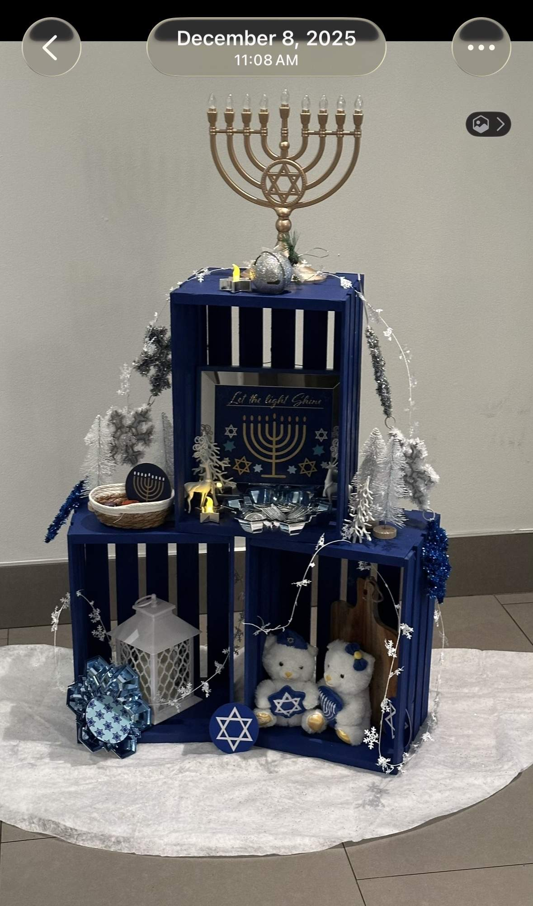
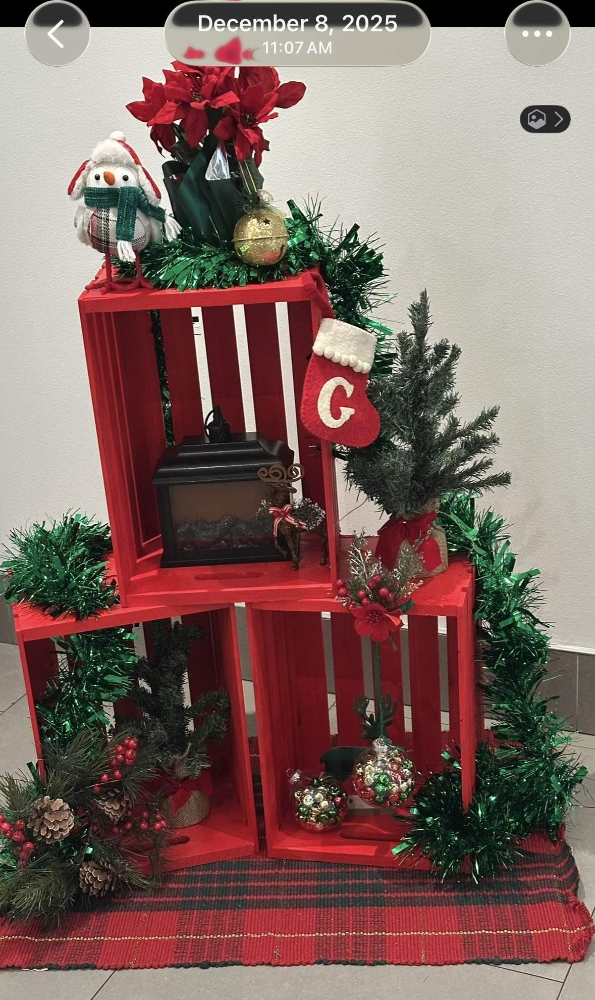
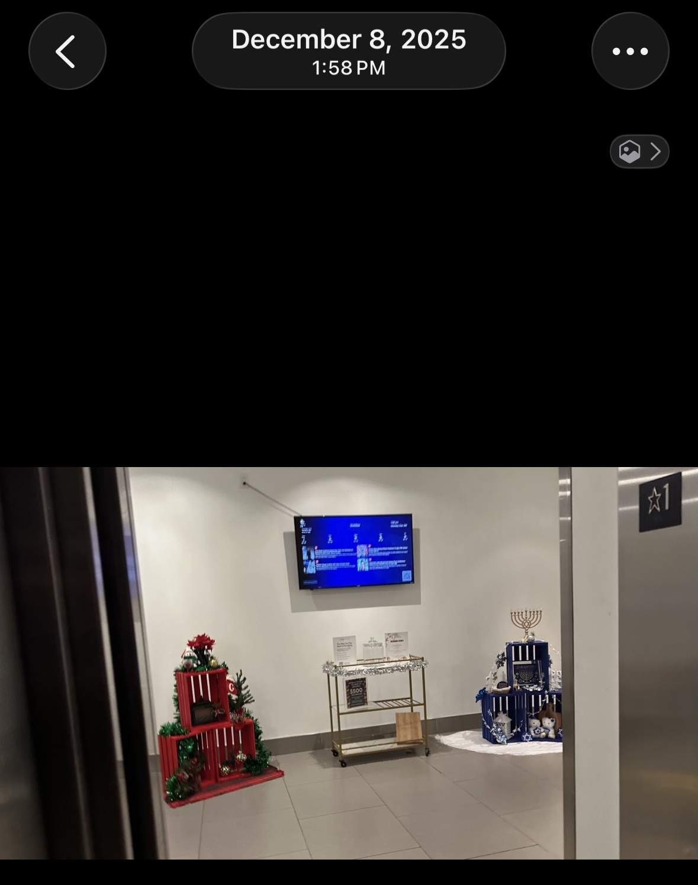

Update Addendum
May 26, 2026 — Timeline Corrections & New Evidence
Photographic evidence, email records, and Ring doorbell footage establish corrected dates for the portable AC installation sequence. Three iMessage transcripts from the trustee establish an escalating pattern of disability coercion predating the chemical exposure. Nicole Cordial’s own email acknowledges the health impact on the same day the FSK tape was installed.
1. Portable AC Installation Timeline — Corrected
The prior record attributed the portable AC installation to “September 2025” when Greystar assumed management. Photographic evidence and email records now establish a two-step sequence in April 2026:
| Date |
Event |
Source |
| Mar. 31, 2026 |
Beneficiary emails Goldtex Manager requesting portable AC: “it’s so hot in here it’s making me not feel well.” |
Email (JustinHornUSA@pm.me → Goldtex Manager) |
| Apr. 1, 2026 |
Portable AC installed — single exhaust tube, no tape. Beneficiary emails temperature data and writes: “I’m ready to move anytime” and references Post Brothers properties at 1200 Callowhill as a possible transfer. |
Email with IoT sensor attachments; Ring doorbell footage of maintenance crew arrival |
| Apr. 6, 2026 |
FSK tape added to portable AC exhaust hose. FLIR thermal imaging captures surface temperatures of 102–114°F at taped junctions (timestamp 14:50–14:52 local). Documentation began the same day the exposure source was created. |
FLIR images (12 captures), file metadata 04-06-26; Ring doorbell footage |
Significance
The HVAC failure remains dated to September 2025 — six months of no cooling before Greystar offered a stopgap. The portable AC was not installed until the beneficiary requested it in writing. The FSK tape was added five days later. The beneficiary’s FLIR documentation began the same day the tape was installed, establishing contemporaneous awareness and eliminating any inference of delayed recognition.
2. Nicole Cordial Acknowledges Health Impact — April 6, 2026
On the same day the FSK tape was installed, Nicole Cordial (Sr. Community Manager, goldtexmgr@greystar.com, cc: Sara Kane) emailed:
“I’m also sorry to hear you might not be feeling well with the portable AC unit. If you think it’s causing any discomfort, we can absolutely remove it for now while we continue working on a permanent fix — just let me know what you’d prefer.”
She also acknowledged no transfer was available: “Nothing is available just yet, but I’m hopeful something will open up soon.”
The beneficiary replied at 4:06 PM, documenting symptoms and demanding a repair timeline:
“It’s causing me medical issues and when I told you the carbon monoxide leaking inside from the portable AC unit was causing me health issues, you asked if I wanted it removed. I thought that was strange given that also would not solve the main issue which is hvac doesn’t work for 6 months plus.”
“Headaches. Cramps. Confusion. Unable to sleep. And more.”
Significance
Nicole’s email is a written admission that Greystar was on notice the portable AC was making the tenant sick — nine days before the April 15 leasing-office video and four days before the Dr. Fabi physician letter. Her offer to “remove it” rather than remediate or test mirrors the coercive ultimatum she would present nine days later on camera. The April 6 email chain establishes that the April 15 encounter was not her first notice — it was her second.
3. Trustee Disability Coercion — March 21 & 30, 2026
Two iMessage exchanges establish that Dr. Abraham S. Horn was actively pressuring the beneficiary to remain on disability in the weeks immediately preceding the chemical exposure. The prior record documented a December 31, 2025 threat to cut support. These messages show the coercion escalated in March 2026.
March 21, 2026, 11:10 AM — Trustee to beneficiary:
“If you choose to terminate the disability before you can develop a successful business, you will have to make do with less.” … “It would be better if you get the disability until you get yourself self-sufficient. Your choices affect me, and I’m telling you that I’m at my limits.”
Beneficiary’s response:
“You want to punish me for wanting to work? For needing a valid ID? Coercing me to go for disability? That’s over.”
March 30, 2026, 1:17 PM — Trustee repeats:
“So if you choose to ditch the disability, you will have to get by with less support from me.”
Beneficiary responded: “I’m able to work more than full time hours right now for myself doing SEO.”
Significance
The trustee’s stated motive was “financial constraints” and “credit.” Trust documents subsequently confirmed an additional motive: the trust’s structure benefited from the beneficiary remaining classified as disabled. The March 2026 messages establish that the trustee was actively coercing the beneficiary to pursue disability status in the same two-week window that the HVAC remained broken and the portable AC was about to be installed. The beneficiary was simultaneously being told by his father to accept disability and by his landlord to accept a toxic unit — or lose support from both.
4. Evidence Preservation & Site-Wide Corrections
Twenty-nine evidence photographs added to the record and published at jlegal.pro/evidence-photos.html, organized in six sections: FLIR thermal imaging (10 captures, April 6, 2026), FSK tape physical evidence, Ring doorbell footage of maintenance visits, the March 31–April 6 email chain with Greystar, Dr. Fabi’s April 10 physician letter, and the trustee’s March 2026 disability coercion messages.
Three arithmetic and data corrections applied site-wide after four-agent audit:
- FLIR temperature range: Corrected from 102–113°F to 102–114°F across all pages (16 references). The 114°F reading is documented in the FLIR captures.
- April 15 to May 6 interval: Corrected from “nineteen days” to twenty-one days across all pages (5 references).
- Kane retaliation timing: Standardized to 94 minutes across all references (was approximated as “~90 minutes” in three summary locations).
Additional corrections: Nicole Cordial title standardized to “Sr. Community Manager” (per her own email signature); Sara Kane title corrected to “Regional Manager”; Dr. Abraham S. Horn middle initial added where missing; visual timeline date corrected (April 14 → April 15 for police/non-renewal event); “weeks earlier” corrected to “months earlier” for assault-to-AC-install gap. OG meta tags and contact information added to all twelve site pages. Thirty-six repository images renamed from generic IMG_xxxx filenames to descriptive labels.
SECTION 2: TRUST STRUCTURE, FINANCIAL ANALYSIS & THE FUNDING LOOP
2.1 Original Trust Structure (November 24, 1993)
The Jennifer Horn Family Trust Agreement of 1993 was executed on
November 24, 1993 in Camden County, New Jersey.
| Settlors |
Abraham S. Horn and Pauline Horn |
| Purpose |
Supplemental needs trust for Jennifer Sherri Horn, a severely disabled individual — to protect Jennifer while preserving her eligibility for government benefits |
| Initial Corpus |
$10.00 (funded separately) |
| Original Co-Trustees |
Abraham S. Horn and Pauline Horn, jointly |
| Successor Trustee Sequence |
(1) Izio Parnes (Pauline’s father) →
(2) Jane Parnes (Pauline’s mother) →
(3) David Parnes (Pauline’s brother)
|
| Governing Law |
New Jersey |
Key Provisions
| Article |
Provision |
| SECOND |
Trust held for Jennifer’s “limited use”; trustee has sole discretion over distributions; no distribution shall render Jennifer ineligible for government benefits |
| FOURTH |
Settlors may amend during joint lifetimes, BUT no amendment materially changing trustee duties is effective without trustee consent |
| SEVENTH |
Trustee SHALL render accounting to Jennifer’s personal representative, to settlors’ other children, and to any current beneficiary; accounts deemed approved unless written exceptions filed within 30 days |
| NINTH |
Trustee may designate successor trustees; if vacancy and no designation, successor appointed by majority of persons designated to receive accounting |
| TWELFTH |
Deferred distribution for beneficiaries under 35 (1/3 at 25, half of remainder at 30, remainder at 35) |
| SIXTEENTH |
Disputes resolved by arbitration |
| SEVENTEENTH |
Intention of no fewer than two trustees |
2.2 Trust Amendment History — Progressive Restriction of Justin’s Rights
| Date |
Action |
Effect on Justin |
Effect on ALY |
| Nov 24, 1993 |
Original trust |
Remainder beneficiary (equal share among children) |
Same |
| Mar 31, 2009 |
Successor appointment |
Named as successor co-trustee (with ALY and Wechsler) |
Named as successor co-trustee |
| Jan 10, 2018 |
First Amendment |
Gets “Sprinkle Trust” — BUT capped at 10% of principal/year; ALL distributions at trustee’s “sole and absolute discretion”; no automatic income |
Gets “Sprinkle Trust” with mandatory quarterly net income payments, $5,000 + 5% withdrawal power, uncapped HEMS distributions |
| May 16, 2022 |
Second successor appointment |
REMOVED from successor trustee list |
Remains as successor co-trustee |
| Mar 28, 2025 |
Second Amendment (Restatement) |
Cap REDUCED from 10% to 5% of principal/year; trust renamed “Bloodline Trust”; supplemental needs provisions added |
Retains all prior rights — mandatory income, withdrawal power, uncapped distributions |
Critical Observation
The trajectory is one of progressive restriction: from equal remainder beneficiary (1993)
→ named successor trustee (2009)
→ capped discretionary beneficiary (2018)
→ removed as successor trustee (2022)
→ cap halved and supplemental needs provisions added (2025).
Each modification reduces Justin’s participation and control while ALY’s terms remain preferential throughout.
The 2025 Amendment Timing
Executed March 28, 2025 — approximately five months before the August 2025 assault at Goldtex
and one year before the May 2026 crisis. Six days after the amendment (April 3, 2025), the trustee sent Justin
disability forms — actively pushing disability paperwork the same week the trust was restructured to remove
direct cash distribution rights.
2.3 Current Trust Administration
Current Trustee: Abraham S. Horn — simultaneously the settlor, sole acting trustee,
and lease guarantor. This triple role creates inherent conflict-of-interest concerns that the original
trust’s multi-trustee design was intended to prevent.
Trust Corpus: $350,000–$390,000 (per trustee’s own May 21, 2025 written description)
Distribution Pattern
- $2,000 monthly cash distribution to Justin
- $1,000 twice-monthly vendor payments (arranged by trustee, not Justin)
- Rent paid directly to Goldtex/Greystar from trust assets
- All disbursements flow through the trustee; Justin has no direct access
The Trustee’s Framing vs. Legal Reality
| Trustee’s Characterization |
Legal Reality |
|
“I am helping you voluntarily because you have problems. It isn’t mandatory.”
|
The NJUTC imposes mandatory fiduciary duties on trustees; distributions under a trust are legal obligations, not charity |
|
“You are not entitled to my support”
|
Justin is a qualified beneficiary with statutory rights under N.J.S.A. 3B:31-67 |
|
“Why should I jeopardize my credit?”
|
Duty of Loyalty (3B:31-55) requires administration solely in the beneficiary’s interest; personal credit protection is a self-interested motive |
|
“Nothing was stolen from you. It belongs to the trust”
|
Concedes Element 2 of N.J.S.A. 2C:21-15 (property entrusted as fiduciary) |
|
“Since the trust was created with elements of control...”
|
Trust law does not deputize “control” — it requires fiduciary administration |
|
“I told you to move way back. All you need is a lease, show it to me, and you’re good to go”
|
Conditioning distributions on prerequisites not found in the trust instrument |
2.4 Table of Disputed Disbursements (Post-License Expiration)
| Date |
Amount |
Payee / Label |
Issue |
| Mar 1, 2026 |
~$2,000 |
Greystar / Post Goldtex LP (rent) |
First post-expiration rent payment; license expired Feb 28 |
| Apr 1, 2026 |
~$2,000 |
Greystar / Post Goldtex LP (rent) |
Continued payment after beneficiary’s April 9 NJUTC notice |
| Apr 15, 2026 |
$8,217.50 |
“2025 taxes (1/2)” |
Justin did not earn enough in 2025 to generate this liability; no return filed |
| Apr 2025 (ongoing) |
Variable |
“Abe Rent Cafe” |
Rent funds routed through trustee-named individual account, not paid directly |
| May 1, 2026 |
~$2,000 |
Greystar / Post Goldtex LP (rent) |
Trigger overt act: paid over written objection, after counsel confirmation of license defect, same day $10K relocation refused |
| Cumulative |
$44,217.50+ |
Conservative itemized total. Argued to exceed $75,000 (second-degree threshold) when designated-vendor disbursements and “Abe Rent Cafe” routing are included. |
2.5 The Funding Loop
The Funding Loop is the central structural finding across all report versions (first articulated in V11,
diagrammed in V12).
THE CLOSED FUNDING LOOP
Trust Assets
→
Trustee (Abe Horn)
→
Greystar / Post Goldtex LP
↓
Greystar Exerts Pressure on Justin Horn
→
Justin Requests Distributions
↓
Trustee Refuses / Conditions
→
CYCLE REPEATS
The Loop Creates a Self-Reinforcing Trap
- Trust funds pay rent to Greystar (the entity causing harm to the beneficiary)
- Greystar uses its position to retaliate against the beneficiary (non-renewal, NTQ, trespass designation)
- The beneficiary needs trust funds to relocate away from the harm
- The trustee refuses unconditional relocation distribution, conditioning it on prerequisites (lease, landlord name, receipts)
- The same trust that should protect the beneficiary funds the entity harming him
The Forgiveness Clause Discovery
The April 15, 2026 Greystar email contained a forgiveness clause:
“If he is able to relocate prior to the end of this 60-day period, we have agreed not to hold him
responsible for any additional rent beyond his move-out date.”
Combined with prepaid last month’s rent, the guarantor’s forward cash obligation was effectively
ZERO. This makes every post-April 15 rent payment elective, not obligatory
— directly contradicting the “I had no choice as guarantor” defense.
2.6 The Disability-Financial Control Nexus
The trustee simultaneously restricted trust benefits and pushed disability paperwork, creating a
double-bind in which neither working nor not-working leads to continued support:
| Date |
Trustee Action |
Significance |
| Mar 28, 2025 |
Second Amendment executed — distribution cap reduced from 10% to 5% of principal/year |
Trust restructured to limit Justin’s maximum annual benefit |
| Apr 3, 2025 |
Disability forms sent to Justin |
Six days after the amendment — actively pushing disability paperwork the same week the trust was restructured |
| Dec 31, 2025 |
Trustee reframes Justin’s work activity as “turning down disability” |
Threatened: “I will be cutting back on all your supplemental monies for everything, since you are giving up the disability” |
| Dec 31, 2025 |
Threatened to contact Justin’s physician directly |
Threatened: “I will email Fabi limiting your monthly care to $800 from me” |
The Double-Bind Pattern
This pattern uses financial control as leverage to create an inescapable trap:
work → lose trust support because “you can earn”;
don’t work → lose trust support because “you’re not pursuing disability.”
Neither path leads to continued support — the trustee retains discretion to withhold in either scenario.
2.7 Attorney Channel Discovery
The May 5, 2026 email header analysis revealed a previously undisclosed coordination channel
between Justin’s former counsel and the trustee’s counsel:
| Finding |
Detail |
| Undisclosed Channel |
Console Matison (Justin’s former counsel) and Sherman Silverstein (trustee’s counsel) maintained a pre-existing written email communication channel on the trust matter that was never disclosed to Justin |
| 53-Minute Production |
Trust documents were produced within 53 minutes of Justin’s direct statutory demand — proving the prior delay was the product of the attorney-to-attorney channel, not Sherman Silverstein withholding |
| Informal Salutation |
The Resnick email (“Hi Joe — Please see enclosed. Jeff.”) used first-name salutation with no formality and no acknowledgment of the beneficiary’s direct demand |
| Contradicted Termination Letter |
Console’s termination letter claimed only a “phone request” — contradicted by email header evidence showing a written thread with 3 prior message-IDs |
| Relevance |
$1,350 fee dispute; N.J.S.A. 3B:31-67 filing; PA Rules of Professional Conduct (Rules 1.4 and 1.16(d)) |
“Hi Joe — Please see enclosed. Jeff.”
— Email from Jeffrey Resnick (Sherman Silverstein) to Joseph Console, May 5, 2026.
First-name informality with zero acknowledgment of the beneficiary’s direct statutory demand
sent the same day.
2.8 Coercion by Manufactured Proximity: The Tracking Number Sequence
Between May 7 and May 10, 2026, the trustee was in possession of a USPS tracking number for a document or instrument sent to the beneficiary. During this period, the trustee repeatedly directed the beneficiary to “check the mail” rather than sharing the tracking number. On May 10, the beneficiary placed this on the iMessage record:
“How many times did you say check the mail and such when you had a tracking number the entire time? Enough that it’s considered harassment and coercion. Just that unto itself is enough.”
The mechanism is specific. The beneficiary is displaced from the unit due to acute VOC exposure (May 6 ambulance transport). Mail, however, is still delivered to the building at 315 N. 12th Street. “Check the mail” — issued without the tracking number that would have made the instruction unnecessary — is a directive to physically return to the exposure source. The tracking number withheld was the instrument that would have resolved the uncertainty without requiring that return.
| Element |
Analysis |
| Information Asymmetry |
Trustee possessed tracking number; beneficiary did not. The asymmetry was maintained for multiple days across multiple directives. |
| Manufactured Proximity |
Each “check the mail” directive manufactured a reason for the beneficiary to return to or remain near the building where the VOC source is active and where further incidents could be documented against him. |
| Dual-Channel Benefit |
The directive served both the trustee (maintaining control over the beneficiary’s movements and information access) and the building (creating additional incidents of presence by a tenant the building has already characterized as a “defiant trespasser” in writing). |
| Coercion Function |
The tracking number was also usable as leverage: its disclosure could be conditioned on compliance with other demands (lease redaction, return to the building, etc.). By withholding it, the trustee preserved it as a conditional instrument. |
| Trust Instrument Basis |
No provision of the Jennifer Horn Family Trust of 1993 authorizes withholding mailing or tracking information from the beneficiary. The conduct is extra-instrument. |
Prior Pattern: The Car Repair Refusal
The tracking number sequence is not an isolated incident. A prior documented instance establishes the same pattern: when the beneficiary needed minor emergency funds for a car repair — gas for a disabled van and approximately $200 for parts — the trustee refused. Co-parent Pauline independently intervened to provide the funds. The beneficiary placed this on the May 10, 2026 iMessage record, directed at the trustee by name:
“Pauline remember when I needed a little cash to fix my car and Abe WOULDNT help. So you came over and got me some gas (my van was out of gas) and about $200 to cover the costs of the parts to repair it. And I did. Why did Pauline need to do that Abe?”
The pattern across both incidents is consistent: the trustee declines a small, urgent, documented need; a third party fills the gap the trustee refuses to fill; the trust instrument’s discretionary structure is not cited as the basis for the refusal. The car repair incident predates the current housing crisis and therefore cannot be characterized as a response to the beneficiary’s current conduct. It is a baseline behavioral instance.
Under N.J.S.A. 3B:31-48(b)(4), a trustee’s exercise of discretion must be evaluated against the purposes of the trust and the interests of the beneficiary. A pattern of refusal for documented urgent needs — predating the current dispute — is relevant to whether the current refusal constitutes a good-faith exercise of discretion or a continuation of a pre-existing pattern of denial.
SECTION 4: PROPERTY VIOLATIONS, INTELLIGENCE, AND RETALIATION PATTERNS
4.1 Building Violations Inventory (as of April 30, 2026)
| Property |
315–23 N 12th Street, Philadelphia, PA 19107 (Goldtex Apartments) |
| Owner |
Post Goldtex LP |
| Manager |
Greystar Real Estate Partners |
| Units |
163 residential |
| License Status |
Rental License #602204 EXPIRED February 28, 2026 — not renewed (Note: As of May 20, 2026, the li.phila.gov Property History page has pruned the expiration date from its display and now shows “Status: Inactive / Inactive date: Apr 28, 2026.” The underlying Eclipse API still returns Feb 28, 2026. The display change is documented in the License Record Display Drift report filed this date.)
|
Summary: 16 open violations across 6 L&I cases
| Case # |
Inspected |
Days Open
(as of 4/30) |
# Viol. |
Subject |
Status |
| CF-2026-010311 |
Feb 5 |
85 |
1 |
Unit 202 thermostat (PM15-603.1) |
PAST DEADLINE (2/18) |
| CF-2026-011056 |
Feb 6 |
83 |
2 |
HVAC + heat, floors 2/3/5/6 (PM15-603.1, PM15-602.3) |
PAST DEADLINE (3/13) |
| CF-2026-012614 |
Feb 11 |
78 |
3 |
UNFIT STRUCTURE + HVAC (PM15-109.1, PM15-603.1, PM15-602.3) |
In Quality of Life Court |
| CF-2026-012633 |
Feb 11 |
78 |
3 |
UNFIT STRUCTURE + HVAC (PM15-109.1, PM15-603.1, PM15-602.3) |
In Quality of Life Court |
| CF-2026-038488 |
Apr 21 |
9 |
1 |
Unit 612 thermostat (PM15-603.1) |
Deadline 5/26 |
| CF-2026-041843 |
Apr 27 |
3 |
6 |
FIRE SAFETY (6 violations) |
Deadline 6/1 |
4.2 Fire Safety Violations Detail (CF-2026-041843 — April 27, 2026)
| Code |
Fine |
Violation |
Significance |
| F-901.6 |
$300 |
Fire alarm panel NOT displaying normal status |
CRITICAL: Primary fire detection system non-functional |
| F-1203.4.3 |
$300 |
No current emergency standby power certification |
No backup power certification for 163-unit building |
| F-909.20.2 |
$300 |
No current smoke control system certification |
Smoke management system uncertified |
| F-5003.5 |
$300 |
NFPA 704 hazard placards missing (basement fire pump room, Wood St exit) |
Hazmat identification missing |
| F-2403.4.3 |
$300 |
No approved metal waste can with self-closing lid (elevator machine room) |
Fire prevention deficiency |
| F-508.1.5 |
$300 |
Unrelated storage in fire command center |
Fire command center compromised |
Financial Exposure
$4,800/day total potential once all deadlines pass; approximately $2,700/day already accruing on the 9 violations past deadline.
Key Finding: Building-Wide Systemic Failure
HVAC is the recurring theme across 4 of 6 cases — a building-wide maintenance failure, not isolated unit-level issues. Heat violations persisted through the entire statutory heating season (October 1 – April 30). Two independent L&I inspection units (Property Maintenance and Fire Safety) found problems simultaneously.
4.3 The License Renewal Block
Under Bill 250329 (Safe Healthy Homes Act, passed April 23, 2026), Post Goldtex LP’s rental license is now structurally blocked from renewal until ALL open violations are cured. This creates:
- Express rent-refund remedy for tenants during unlicensed operation (all 163 units)
- Anti-retaliation protections codified in Bill 250330 (effective November 2026)
- Anti-Displacement Fund access under Bill 250331 (already in force)
Litigation Watch: HAPCO Philadelphia filed a federal lawsuit challenging Bills 250329/250330; hearing scheduled for June 2026. Outcome could affect the availability of the express rent-refund remedy and the anti-retaliation codification.
4.4 OSINT Intelligence Assessment (ICD 203 Compliant)
| Source |
GOLDTEX OSINT ICD203 v2.1, dated April 25, 2026 |
| Framework |
ICD 203 Analytic Standards; NATO STANAG 2511 (Admiralty Code) |
| Classification |
UNCLASSIFIED // OPEN SOURCE / PUBLIC RECORD |
Key Judgments
| ID |
Confidence |
Assessment |
| KJ-1 |
HIGH CONFIDENCE |
Rent-recovery theory for ~55-day unlicensed-operation period now has express Philadelphia code remedy under Bill 250329, supplementing PA UTPCPL + warranty of habitability + 68 Pa.C.S. §250.511a |
| KJ-3 |
OPERATIONALLY ELEVATED |
License renewal structurally blocked until all 13+ open line-items cured |
| KJ-7 |
MODERATE CONFIDENCE |
Retaliation theory acquires Philadelphia code anchor under Bill 250330 once effective November 2026 |
Intelligence Gaps
| Gap ID |
Description |
| G-10 |
HAPCO federal lawsuit posture (June 2026 hearing) |
| G-11 |
Mayor’s “legally problematic language” specifics |
| G-12 |
Retroactivity construction for pre-November 2026 conduct |
4.5 The Fire-Hazard Misrepresentation
Key Finding: This is the single most clearly documented misrepresentation in the entire file.
What Greystar Told the Trustee (April 15, 2026 email to Abe Horn):
“According to the information provided, the city has deemed the unit a potential fire hazard, which poses a risk to other residents.”
What L&I Actually Said (Code Enforcement Supervisor Anthony Williams):
“There is no documentation or report of a fire violation for that unit.”
The inspector had a discussion with management; management asked if storage could be a fire hazard; inspector said yes. “The inspector did not deem the potential high enough to issue a violation on the occupant for the storage at the time of inspection.”
The Discrepancy
Greystar attributed a building-wide fire-safety problem (their own 6 fire violations) to an individual tenant’s unit to justify non-renewal, then sent this false characterization to the father/trustee — not to the tenant.
4.6 Toxic Exposure Documentation
She had actual notice of this hazard on the April 15 leasing-office video. See Recorded Admission.
Source 1 — FSK Tape on Portable AC Unit
The property manager had actual notice of this hazard on the April 15 leasing-office video. See Recorded Admission & Mens Rea Analysis.
| Equipment |
Greystar-installed Brothers Model 102130 portable AC with FSK (Foil-Scrim-Kraft) tape on exhaust hose joint |
| Thermal Imaging |
FLIR thermal imaging: 102–114°F surface temperatures at taped junctions |
| Internal Air Temp |
Estimated 120–140°F within exhaust hose |
| VOCs Released |
Toluene, xylene, styrene, formaldehyde, phthalates, tackifier resins |
| Medical Confirmation |
Dr. Mark Fabi, M.D. letter (April 10, 2026) confirms airborne contaminant concerns; VOC sensitization documented by treating physician |
| Root Cause |
Central HVAC failed September 2025; never repaired. Portable AC installed April 1, 2026 (one tube, no tape); FSK tape added April 6, 2026 |
Source 2 — Window-Seal Off-Gassing (May 1, 2026)
| Exposure Source |
Degraded sealing tape and adhesive on window assembly off-gassing into Unit 806’s only operable window |
| Remediation |
Greystar removed the material in approximately 15 minutes when threatened with hazmat call — proving it was identifiable, removable, and that Justin had been exposed for an extended prior period |
Health Impact
- Symptoms: headache, throat irritation, nausea, confusion, dizziness, sleep disruption
- May 6, 2026: Ambulance transport to ER; treatment with oxygen; 4 outgoing 911 calls totaling 18 minutes
- Currently wearing KN-95 mask inside apartment; staying at Airbnbs intermittently
- Two cats showing visible signs of illness
- Risk: Developing Multiple Chemical Sensitivity (MCS)
- Self-funded $250 in air remediation equipment (HEPA scrubber, Coway Airmega); symptoms resolved within hours — confirming VOC exposure was real
Source-Identification Timeline (Recognition Latency)
The exposure-to-recognition window was substantial. Symptoms preceded source identification by approximately 15 days, divided across two distinct recognition events.
∼10-day window (AC exhaust hose). Symptoms began at an indeterminate point following the April 6, 2026 FSK tape installation on the portable AC exhaust hose. Approximately 10 days of symptom correlation, thermal documentation (first captures April 6, 2026), and chemical-emissions research were required to identify the FSK-taped exhaust hose as the dominant source.
∼5-day window (window-frame tape). A separate FSK-tape application around the window frame was identified as an additional, independent VOC source approximately 5 days after the AC hose was identified. The window-frame tape was thermally stressed by direct solar exposure on the east-facing window and off-gassed independently of AC runtime.
Significance. A reasonable occupant does not immediately attribute headache, throat irritation, and dizziness to FSK-tape adhesive thermally degrading under solar load or compressor heat. Identification required FLIR imaging, SDS research, and multi-day symptom correlation. The 15-day floor for recognition latency is the period during which the beneficiary was exposed without attribution and therefore without ability to mitigate.
The Re-Exposure Pattern
The exposure was not a single continuous condition. It was compounded by intervention events that redistributed the contamination rather than remediating the source.
-
Razor removal of window-frame tape. When Greystar agents subsequently removed the window-frame tape using a razor, residual adhesive remained on the metal frame and the removal process generated fresh airborne exposure. Source elimination was not achieved; the source was redistributed.
-
Whole-unit deposition. By the point of removal, off-gassed compounds had deposited onto fabric, electronics, and porous surfaces throughout Unit 806. Re-entries of ∼10 minutes during May 2026 retrieval attempts produced multi-day symptom flares, confirming that secondary contamination persists independent of the original source.
-
EMS / first-responder hallway exposure. Two EMS personnel responding to the May 6, 2026 call reported acute dizziness in the building hallway, captured on the beneficiary’s Ring camera. This is third-party corroboration that the affected envelope extended beyond Unit 806 itself.
SERVPRO’s May 13, 2026 refusal (documented above) corroborates that residential-scope remediation cannot address the dispersed contamination. The May 8, 2026 demand to Cohen Marraccini LLC for licensed industrial-hygiene remediation remains the operative remedy.
The Coercive AC Ultimatum (Audio-Recorded)
The following exchange is captured on the beneficiary’s recorded video of the Goldtex management office encounter (YouTube, audio analysis: Goldtex Audio Analysis.pdf). Property manager Nicole presents a coercive false binary regarding the portable AC unit — the only cooling source in Unit 806 after the central HVAC failed in September 2025 and was never repaired. The portable AC was installed April 1, 2026; FSK tape was added April 6.
Nicole (~243–249 s): “Is your portable unit hooked up to your window? … When two [maintenance workers] went into your apartment … it wasn’t hooked up.”
Nicole (~249 s): “That’s correct. And we have people who need it and are willing to let us hook it up. So if you’re not willing to let us hook it up and utilize it…”
Justin (~256 s): “I need it. I can’t breathe with the air that’s come in there. I got sick. I have doctor’s notes and you guys know that.”
Nicole (~388 s): “Then you’re welcome to break your lease and move out because if you feel that we’re not doing an adequate job here…”
The three-way trap. Nicole conditions access to the only available cooling on allowing Greystar to reconnect the FSK-taped exhaust hose to the window — the same exhaust hose the beneficiary had identified, photographed with FLIR thermal imaging (102–114°F), and reported to his physician as the source of his acute symptoms. The implicit ultimatum has three branches, all of which harm the tenant:
-
Accept reconnection → continued VOC inhalation from thermally degraded FSK adhesive, the exposure that had already produced symptoms severe enough for a physician letter (April 10, 2026) and would produce an ambulance transport 21 days later (May 6, 2026).
-
Refuse reconnection → Greystar removes the portable unit entirely (“we have people who need it”), leaving the beneficiary in an 88°F unit with no cooling of any kind and two cats at risk.
-
Leave → Nicole’s lease-break invitation at 388 s, offered to a tenant who has just told her he is sick and has a doctor’s note.
Knowledge of harm — stated on the recording and unchallenged. At ~256 s, the beneficiary tells Nicole directly: “I got sick. I have doctor’s notes and you guys know that.” The phrase “and you guys know that” is an on-record assertion that Greystar had prior knowledge of the health impact. Nicole does not dispute it. She does not say “we didn’t know.” She does not ask for details. She does not offer remediation. Her next substantive response, at 388 s, is to invite the tenant to break his lease and leave. Dr. Mark Fabi’s April 10, 2026 letter confirming airborne contaminant concerns in Unit 806 was already on the record. The beneficiary’s FLIR thermal photographs documenting 102–114°F surface temperatures at the FSK-taped exhaust junctions had been captured beginning April 6, 2026. Greystar was not operating in ignorance — they were conditioning cooling access on the tenant’s acceptance of a documented health hazard.
Admission by conduct. The sequence captured on this recording functions as a near-confession. Nicole is told, on tape, that the unit she manages is making a tenant sick. She is told the tenant has medical documentation. She does not deny knowledge. She does not offer to inspect, test, or remediate. Instead, she threatens to remove the only cooling source if the tenant will not accept the exposure, and then invites him to vacate. A property manager who hears “your unit is making me sick, I have a doctor’s note, and you know it” and responds with “then leave” has not failed to act — she has chosen not to act. The recording preserves that choice.
Structural coercion. The dependency on the portable AC unit was itself created by Greystar’s failure to repair the central HVAC since September 2025. When the beneficiary requested a portable unit in March 2026, Greystar installed one on April 1 and added FSK tape on April 6. Nicole acknowledged health concerns that same day by email. The landlord broke the system, supplied a toxic substitute, learned the substitute was making the tenant sick, and then threatened to remove it if the tenant would not allow them to reconnect the exposure source. This is not a maintenance dispute. It is coercion into a known health hazard.
Criminal Exposure: Reckless Endangerment
18 Pa.C.S. § 2705 — Recklessly Endangering Another Person. “A person commits a misdemeanor of the second degree if he recklessly engages in conduct which places or may place another person in danger of death or serious bodily injury.”
The recorded exchange establishes every element:
-
Knowledge of the hazard. The beneficiary tells Nicole on tape: “I got sick. I have doctor’s notes and you guys know that.” Nicole does not dispute knowledge. Dr. Fabi’s April 10, 2026 letter was on the record. FLIR photographs documenting 102–114°F surface temperatures at the FSK-taped junctions had been captured beginning April 6, 2026.
-
Conscious disregard of the risk. Nicole’s response to being told the unit is making the tenant sick is not to inspect, test, or remediate. It is to threaten removal of the only cooling source and invite the tenant to vacate. This is not ignorance or negligence — it is an election to maintain a known hazardous condition.
-
Danger of death or serious bodily injury. Twenty-one days after this exchange, the beneficiary was transported by ambulance to the emergency room (May 6, 2026) and treated with oxygen. SERVPRO subsequently refused to remediate, assessing the exposure as exceeding residential scope. Two EMS personnel reported acute dizziness in the building hallway. The trajectory — documented symptoms, physician letter, ambulance transport, industrial-hygiene referral — establishes that the exposure placed the beneficiary in danger of serious bodily injury.
-
Conduct, not omission. Greystar did not merely fail to act. They actively conditioned access to the only cooling source on the tenant’s acceptance of the exposure. The coercive ultimatum is affirmative conduct — it forecloses the tenant’s ability to mitigate while maintaining the hazard.
Aggravated assault under 18 Pa.C.S. § 2702(a)(1) may also apply if the resulting injury — acute VOC poisoning requiring emergency medical treatment, ongoing Multiple Chemical Sensitivity — meets the statutory threshold for serious bodily injury caused under circumstances manifesting extreme indifference to the value of human life.
The recording is the evidence. The beneficiary told management the unit was making him sick, cited medical documentation, and said “you guys know that.” Management’s response, preserved on audio, was to threaten to take away his cooling and tell him to leave. What followed was an ambulance.
4.7 Documented Retaliation Pattern
Pattern 1: Systematic Reframing of Victim as Problem
| Date |
Protected Activity |
Adverse Action |
Regime |
| Summer 2025 |
Reports antisemitic content |
— |
Pre-Greystar |
| Aug 22, 2025 |
Is victim of assault |
Staff tells police Horn was aggressor; claims no video exists (both false) |
Pre-Greystar |
| Aug 23, 2025 |
— |
Maintenance worker asks “one punch?” mapping onto defense theory before it’s articulated |
Pre-Greystar |
| Oct 6, 2025 |
Habitability complaint |
Resident Conduct letter issued 94 minutes after complaint |
Sara Kane |
| Apr 15, 2026 |
Asks for return of building’s own AC unit |
Cordial calls police on Horn (cleared, DC #26-09-047257); issues non-renewal notice same day; Horn files harassment report against Cordial later that evening (DC #26-09-47920) |
Nicole Cordial |
| Apr 26–28, 2026 |
Posts factual tenant-organizing flyers |
Flyers physically removed and discarded |
Nicole Cordial |
| Apr 28, 2026 |
— |
Building-wide email characterizing Horn as “an individual”; excludes him from distribution |
Nicole Cordial |
| Apr 30, 2026 |
Continued documentation |
Horn files third report (DC #26-09-055021): verbal-channel defamation — staff telling residents Horn is “crazy” |
Nicole Cordial |
| May 4, 2026 |
— |
NTQ issued; labels Horn “defiant trespasser”; bars from leasing office |
Cohen Marraccini LLC |
| May 18–19, 2026 |
Posts 4PHILLY.NET on r/philly; cross-posts to Facebook |
Reddit user u/opbmedia (display name ProfessorZ) initiates sustained adversarial engagement within ~15 minutes of cross-platform dissemination; escalates through litigation framing (“who should I sue?”, “damages to lives and homes”); edits comment mid-thread to add “Claude” after author’s AI-assist disclosure; disengages when reverse-OSINT begins. Singular anomaly on subject’s own infrastructure: anonymous FTP on port 21 of opbmedia.com (bait-and-hook structure). See V3 Integrated Report. |
External / opbmedia |
| May 19, 2026 |
Files NJ criminal charges via Cherry Hill PD |
Cherry Hill PD Case #26-029411 (Officer Ebling #539). Charges: 2C:21-15 (Misapplication of Entrusted Property, 2nd degree, $84,403.23); 2C:20-4 (Theft by Deception, $8,217.50); 2C:20-9 (Theft by Failure to Make Required Disposition); 2C:13-5 (Criminal Coercion); 2C:5-2 (Conspiracy). NJ Certification in Support of Probable Cause form provided. |
Abraham S. Horn / Trust |
| May 19, 2026 |
Formal BWC demand to DA |
Written demand to ADA Andrew Lay (CC: Tracee Washington, Madison Gray / Public Interest Law Center) for all body-worn camera footage from Aug 22, 2025 incident, Cpl. Snyder BWC (DC #26-09-0597175), and subpoena for Goldtex surveillance per Bercovitch preservation letter |
DA’s Office / Brady |
Key Finding: Cross-Regime Continuity
Same structural pattern across two management regimes proves institutional (not personal) conduct. The front-desk employee who lied to police was terminated, but the “reframe the victim as the cause” narrative was carried forward by subsequent management.
Pattern 2: Three-Front Convergence on Credibility Destruction
| Party |
Requires Horn to Be… |
| Criminal Defense |
The aggressor |
| Landlord |
The disturbance |
| Trustee |
Incompetent or dangerous |
Each party’s conduct only survives scrutiny if Horn is constructed as not credible. The convergence is structural, not coincidental.
Pattern 3: Routing Adverse Action Through Family Vulnerability
Non-renewal sent to Abraham S. Horn (father/trustee/guarantor) FIRST, despite Greystar’s knowledge of documented history of abuse. This routes adverse action through a known vector of harm.
Pattern 4: Proximity Coercion via Trust Channel (May 7–10, 2026)
Pattern 3 describes the structural routing: adverse action flows through the family/trustee relationship. Pattern 4 is Pattern 3 made operational. Having established the family channel as the conduit, the trustee used it to manufacture repeated physical proximity to the building.
Trustee possessed USPS tracking number and withheld it across multiple days while issuing repeated directives to “check the mail.” Each directive manufactured a reason for the displaced beneficiary to physically return to the building where the VOC exposure source is active and where the tenancy has been characterized as adversarial in writing.
The building’s interest and the trustee’s conduct align: Greystar needs Horn to return to the unit or common areas to generate additional incident documentation supporting the “defiant trespasser” designation in the May 4 NTQ. The trustee’s “check the mail” directives provide the occasion. Whether or not there is any coordination, the structural effect is the same — the trust channel delivers the beneficiary back to the exposure site.
On May 10, 2026, the beneficiary named this pattern on the iMessage record and issued a written cease-and-desist demand directly to the trustee. The trustee’s response was to characterize the beneficiary as “unreasonably spiteful and hateful” for declining to comply with a lease-redaction condition not found in the trust instrument. That response is itself a Pattern 2 instance: DARVO applied to convert the trustee’s conduct into the beneficiary’s fault. See §2.8 for full tracking number sequence analysis.
4.7.A Reframing as Frame-Up Predicate
Reframing is the predicate for a frame-up. It works by laying down characterization in advance so any future “incident” gets interpreted through the pre-built narrative.
What is Already on the Record
One police call against Horn, cleared — April 15, DC #26-09-047257, Cordial called the police, officers found no crime. Two reports Horn filed against the building — April 15 later that evening, DC #26-09-47920; April 30, DC #26-09-055021. Three police records exist with the building name and Horn’s name attached. Future readers do not always parse who-called-whom; they see “police involvement at this address with this tenant,” and that is the predicate work the existence of the records does, regardless of who initiated them.
The compression of April 15 is itself part of the record: Cordial’s police call against Horn, her non-renewal letter, and Horn’s harassment report against her all land inside one date.
The Predicate Layer
The “defiant trespasser” label in the May 4 Cohen Marraccini NTQ is doing legal work. It is the predicate for a criminal trespass charge if Horn engages with the leasing office, or — on a defensible reading after June 15 — any common area where Greystar takes the position the tenancy has terminated. The label was placed before the date arrives.
The fire-hazard attribution — Greystar telling the trustee “the city has deemed the unit a potential fire hazard, which poses a risk to other residents” — places Horn in a “danger to other residents” category. L&I supervisor Anthony Williams confirmed no fire violation was issued for the unit. The characterization survives only as long as no one asks L&I directly. Until that happens, it is available for use.
The April 28 building-wide email referring to Horn as “an individual” while excluding him from the distribution list pre-positions other tenants. Any future incident gets received by neighbors who have already been told, in writing, that there is an “individual” causing problems. They do not have to be told who. They figure it out.
The verbal “crazy” channel through staff to other residents primes the same audience without leaving a paper trail. DC #26-09-055021 is the first written record of that pattern, but the smear itself lives in conversations between staff and residents that are not documented anywhere except by what residents repeat back.
Routing the non-renewal to the trustee first builds the parallel “incompetent / needs intervention” frame on the trust side. The two frames feed each other. The building characterizes Horn as a problem; the trustee gets primed to receive that as confirmation; the trustee withholds the resources Horn would use to remove himself from the building. The closed funding loop described at § 2.5 has a credibility-destruction analog on the framing side.
What This Opens Up
Trespass arrest if Horn engages with the leasing office, on the strength of the May 4 designation.
The capacity-petition vector the file already anticipates (§ 5.1). The trustee has standing as a parent, has the physician credential, and the trustee’s “I can’t verify what you say” disclaimer of May 7, 2026 (≈ 4:45 PM) operates as exactly the kind of phrasing that precedes a capacity argument. The trustee is now on the record stating he does not believe his adult son’s accounts of his own circumstances. Combined with the documented weaponization of the physician credential earlier in life (childhood defiance framed as “oppositional,” sadness as “clinical depression”), the predicate is in place.
What defends against the capacity argument is the documentary record itself. Everything Horn has produced from late April forward is also competence evidence, which is part of what the consolidated master report does in addition to its primary purpose.
The Talley Conversion
The Talley overlap is the part that converts civil retaliation into 18 Pa.C.S. §4952 / §4953 territory. Horn is the primary witness in Commonwealth v. Talley, CP-51-CR-0000673-2026. The June 15 vacate date sits inside the active witness window. The same building where the assault happened is now constructing Horn as not-credible across written (the NTQ, the building-wide email), physical (flyer removal), and verbal (staff-to-residents) channels. Whether or not anyone in the chain is consciously coordinating, the effect lands in witness-intimidation and retaliation-against-victim territory.
Independent actors with aligned interests do not need to coordinate. The structure does the work.
The three-front convergence at § 4.7 Pattern 2 is the cleanest description of why this reads as organic rather than orchestrated. Criminal defense needs Horn as the aggressor. Landlord needs Horn as the disturbance. Trustee needs Horn as incompetent. A single reframe — “Justin is the problem” — services all three simultaneously, and each party arrives at it from its own incentives without having to talk to the others.
What Breaks the Frame
Every adverse action is paired in writing with the protected activity that preceded it. The timing windows are tight enough to defeat the coincidence defense. Cross-regime continuity — Sara Kane in October 2025, Nicole Cordial in April 2026, two different managers running the same playbook — shows the pattern is institutional posture, not personality conflict. The documentary record converts any future “incident” from a fresh allegation into a predictable next entry in a documented retaliatory sequence. That is the protection the file provides. It is why the file exists.
4.8 DA Submission Strategy (May 7, 2026)
The DA submission to the Philadelphia District Attorney (Commonwealth v. Talley, CP-51-CR-0000673-2026) is carefully calibrated:
What It Does NOT Ask
The Commonwealth to take any action on housing or trust disputes.
What It DOES Ask
-
Awareness that the primary witness is scheduled to be displaced from his residence within the active witness window by a court-ordered vacate date of June 15, 2026
-
Awareness that parallel adverse conduct comes from the same building/ownership where the assault occurred and where staff previously made false statements to police
-
Any defense effort to impeach Horn through collateral material from housing or trust matters should be evaluated against the documented pattern
Legal Hooks
| Statute |
Provision |
| 18 Pa.C.S. §4952 |
Witness intimidation |
| 18 Pa.C.S. §4953 |
Retaliation against witness or victim for reporting or participating in prosecution |
The Witness-Window Concern
Court-issued vacate date (June 15, 2026) falls within the active witness window for the Talley criminal trial. Displacement of the primary witness on the eve of trial warrants examination regardless of subjective intent.
End of Section 4 — Property Violations, Intelligence, and Retaliation Patterns
§4.8 — The December 2025 Lobby Displays: Performance, Then Setup
108 days after the antisemitic assault — same lobby, same building
On December 8, 2025, Greystar staged two dedicated holiday displays in the Goldtex 1st-floor lobby — the same lobby where I had been assaulted on August 22, 2025, in an attack that included antisemitic slurs.
The displays were not blended. They were separated and equal-billed:
- A red crate display dedicated to Christmas.
- A blue crate display dedicated to Hanukkah — a large gold electric menorah with the Star of David in its arms, a “Let the Light Shine” framed print, dreidels, snowflake garland, and stuffed bears in yarmulkes.
Both displays were photographed in the main public space of the lobby at 11:07–11:08 AM, flanking the building’s promo bar cart, directly opposite the elevators.

Hanukkah display — Dec 8, 2025, 11:08 AM

Christmas display — Dec 8, 2025, 11:07 AM

Both displays — Dec 8, 2025, 1:58 PM
Why It Registered as Safety
I had been asking Greystar for a unit transfer for over a year before this — long before the August 22 assault, and continuing after it. The refusals were never explained.
Inclusive holiday programming is typically blended — one combined display, one “Happy Holidays” message. The December 8 setup did the opposite: it gave Hanukkah its own dedicated footprint in the same public space where the antisemitic assault had occurred 108 days earlier. To me, at the time, that read as affirmative recognition. The building appeared to be taking the antisemitic dimension of August 22 seriously.
I relied on that signal. I stopped pushing as hard on the transfer request because the building looked safer than it had been in August.
What I Now Understand
The signal was performance. The conduct was the opposite.
Read backwards from May 2026, the dedicated Hanukkah display functioned as the public-facing inverse of the actual decision-making: the building visibly performed safety for Jewish residents in the lobby while privately refusing the one operational step — a unit transfer — that would have delivered safety to the Jewish resident asking for it.
Over-performed recognition in the public space; sustained refusal of the simple internal accommodation in the private one. The display kept me there. Believing the building was Jewish-safe was the reason I did not escalate the transfer demand harder when I should have.
The Pattern in Two Columns
| What Greystar Did Publicly |
What Greystar Did to Me |
| Dec 8, 2025 — dedicated Hanukkah display in the assault lobby, equal-billed |
Refused unit transfer requests dating back over a year |
| Lobby reads as Jewish-affirming to all residents and guests |
Oct 6, 2025 Kane retaliation letter; continued refusal of any transfer |
| “Let the Light Shine” framed in the central public space |
HVAC in Unit 806 left unrepaired since Sept. 2025; portable AC with FSK tape installed April 6, 2026 |
| Public performance of recognition |
Apr 15, 2026 non-renewal; May 4, 2026 NTQ; May 6, 2026 ER transport |
Connection to the Existing Record
This is the same logic the §2705 April 15 leasing-office video captures in a closed room. Harm-stopping options within management’s authority are withheld; harm-continuing options are presented as the only choices. December 8 is the same conduct in the lobby. The transfer was always within Greystar’s authority. It was never offered. The display was offered instead.